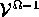
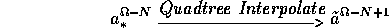
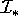
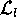
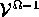
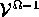
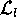
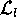

Modular Integration for Low-level
and High-level Vision Problems in a Multiresolution Framework
Synopsis
Submitted in Partial Fulfillment of the Requirements
of the degree of
Doctor of Philosophy
by K. Sunil Kumar
Thesis Advisors Professor U. B. Desai Professor P. G. Poonacha
DEPARTMENT OF ELECTRICAL ENGINEERING INDIAN INSTITUTE OF TECHNOLOGY - BOMBAY POWAI, MUMBAI 400 076. 1996
Vision comes to human so naturally that the processing capability of the
human visual system is often taken for granted. We neither realize
its complexity nor the difficulty in automating it. Problems in vision can
be broadly categorized into (i) low-level vision and (ii) high-level
vision. The vision tasks that make up for the low-level vision are, for
example, edge detection, segmentation, optical flow estimation and depth
estimation from stereo pair to name a few. The tasks of image recognition,
scene interpretation or understanding, navigation make up the
high-level vision.
In the generalized framework, a vision task can be considered to be
performing the task of estimating an image attribute , say , from an observed
image or a sequence of observed images. For example, in case of the
vision
task of scene interpretation, would correspond to the semantic
labels associated with different regions in the image , or in case of
stereo vision, would correspond to the disparity or the depth map.
In many vision tasks, the observed image may not be used as it is in
estimating the attribute . In fact, in many vision tasks, it is some
information derived from the observed image or images which would
be utilized. For example, in case of stereo vision, in addition to the
observed image , one would use the zero crossings or edge information
derived from the observed stereo pair. We refer to these variables
derived from the observed image as core variables and denote
them by . Note, in some vision tasks , for example image
restoration.
There is one more item, which often gets relegated to the list of
assumptions which is used in solving a vision task. This is the apriori
knowledge, for example, in stereo vision one assumes that the range of
disparity is known. We denote the domain knowledge by .
In order to present a formal computational formulation for the vision
task , we need a relation between the attribute and the pair . In our work, a probabilistic relationship is assumed, namely
, the probability distribution of the attribute given the
core variables and the domain knowledge is either known or
derived. We can now solve the attribute estimation problem as a maximum
apostoriori (MAP) estimation problem. We can express the problem of
solving the vision task as:
Given (i) the core variables , (ii) apriori domain
knowledge and (iii) the relation . The optimal attribute is obtained by solving the MAP estimation problem
Most vision tasks are motivated by the human visual system (HVS) which is
undoubtedly the best vision system and an excellent image processor. HVS
is robust in the sense it rarely gets fooled. Results obtained from
experiments conducted on the visual systems of primates and experiments
conducted in psychophysics and physiology of vision are used as factors to
motivate the vision tasks, because HVS is one of those subjects which is
least understood though very widely used.
Figure 1: The approach that we follow in the thesis - the modular integration
is along the y-axis and the multiresolution is seen along the x-axis. The
subtasks are shown with dotted rectangles and the vision task by dotted
rectangles. The largest solid rectangle is the vision task to be solved
Experiments from psychophysics and physiology of the visual system
[1] motivate us to look at the problem of solving the vision
task by dividing it into m smaller tasks (called subtasks or
modules) , , , , . Each subtask or module
interacts with other modules -- this is referred
to as modular integration. For example, the low-level vision task of
stereo vision can be looked upon as being made up of three smaller modules,
namely (i) the feature extraction module, (ii) the matching module and
(iii) the interpolation module. Integration or synergism of modules is a
technique where various modules get together to perform the given task
better than when working individually with only feedforward interaction. In
other
words, the modules work as a team rather than as individual modules; as a
result the performance of each module is enhanced and this reflects in the
overall improvement in the solution of the given vision task. Figure
1 shows the vision task at any given resolution
being divided into three subtasks , and . The MAP
estimation problem is solved for each module , to
obtain the optimal attribute for each module, the attribute corresponding to the
vision task could be any one of these attributes. For example, in
case of
stereo vision we obtain attributes corresponding to the line fields and the
disparity field, though the attribute of interest is only the disparity map.
Now, the problem of solving the vision task can be expressed as:
Given (i) the core variables , (ii) apriori domain
knowledge and (iii) the relation . The optimal attribute is obtained by solving the MAP estimation problem for
Of all the attribute , , only one attribute would
correspond to the solution of the vision task . Nevertheless other
attributes may be of interest in themselves.
Again, experimental results show that a multi-frequency channel decomposition
seems to be taking place in the human visual cortex [2].
Experiments based on adaptation techniques show that at some stage in the
HVS, the visual information in different frequency bands is processed
separately. It was also experimentally found that the retina image seems
to be decomposed in several frequency bands having approximately the same
bandwidth on an octave scale. These experimental results motivate us to
look at the vision tasks in a multiresolution framework.
Multiresolution is an efficient and effective way of representing data.
The data at each resolution is the output of a bandpass filter with
some center frequency (usually the center frequency of the filters are
octave apart). The use of multiresolution is also motivated by the fact
that the computational complexity of any vision task is large and
multiresolution can be used effectively to reduce the computational
complexity. Now, the problem of solving the vision task is reduced to
the task of solving at each resolution. Figure 1
along the x-axis shows the multiresolution approach. Let,
represent the
vision task at resolution . In the multiresolution approach the vision
task is not solved directly at the resolution , but by
solving the vision tasks , , at coarser
resolutions. Typically the vision task at the coarsest resolution
, is solved by estimating the optimal attribute
by
The optimal solution obtained at resolution is
quadtree interpolated to the next finer resolution,

is used to solve the vision task at the next finer resolution, namely, in
solving the vision task . The obtained
which is used as initialization is clubbed into the
apriori knowledge and the vision task at
resolution
is solved by estimating the optimal attribute as,
Now, we can express the problem of solving the vision task in the
multiresolution framework as:
Given (i) the core variables , (ii) apriori domain
knowledge and (iii) the relation .
The optimal attribute is obtained by solving the MAP
estimation problem for
followed by a quadtree interpolation
the knowledge of is embedded into to
be used at the next resolution.
In this thesis, we look at the vision task in the framework of
modular integration and multiresolution. The formulation of the vision
task involving both modular integration and multiresolution would be as
shown for the modular integration, except that the modular integration
would be carried out at each resolution . The problem of solving the
vision task in the framework of multiresolution and modular
integration can be expressed as:
Given (i) the core variables , (ii) apriori domain
knowledge and (iii) the relation .
The optimal attribute is obtained by solving the MAP
estimation problem for (multiresolution) and (modular integration)
Of all the attribute , , only one attribute \
(say ) would correspond to the solution of the vision
task .
The optimal solution obtained at resolution
is quadtree interpolated as
and is used to solve the vision task at the next finer resolution namely
. The obtained
which is used as initialization is clubbed into the
apriori knowledge and the vision task at
resolution
is solved by estimating the optimal attribute as,
In this thesis, we
specifically look at three problems, namely,
color image restoration,
integrated stereo vision, and
scene interpretation.
Table 1 shows these vision
tasks in the generalized framework. Associated with each vision task ,
the knowledge , the core variables , the modules that are
integrated and the attribute that is extracted have been shown.
Table 1: Some specific vision tasks in the generalized
framework
Note: Though in the strict sense color image
restoration is a preprocessing task, we have categorized it as a low level
vision task along with the stereo vision.
Color Image Restoration
In color image restoration, the image is modeled as a Markov Random field
(MRF) and an additive noise degradation model () is considered.
The color
image restoration becomes one of estimating the parameter associated with
the clique potentials coming from the imposed assumption of MRF model on
the image, and then using the obtained parameters to restore the image.
The problem can be stated as:
Find the optimum parameter and restored image
pair ( ) such that
and
Parameter estimation (1) is done along the lines
of [3] using the homotopy continuation method. The
restoration (2) would involve the minimization
of the energy function
Equation (3) results from the following
assumptions: (i) the additive noise degradation model, (ii)
the image being modeled as a MRF, and (iii) the noise being Gaussian.
In (3),
, and the three components , k=1, 2, 3 correspond
to the three components of the color image. For example in the RGB color
coordinate system they would correspond to the red, green and blue
components. and are the line fields
defined as
In our simulation work we use
Estimation of parameter would imply estimation of
and of (3) and which comes due to
the degradation model.
The parameter estimation module and the restoration module interact over
resolutions in an unsupervised framework. In the unsupervised
parameter estimation and restoration algorithm, the schematic of which is
shown in Figure 2, we assume that the degraded image
at the coarsest resolution (which is obtained by low-pass filtering the
degraded image at the finest resolution) to be the restored image. We
estimate the clique parameters, and , at this
resolution. Having
obtained the clique parameters we carry out image restoration (solve
(2)) at that resolution. As seen in Figure
2, a part of the restored image is used for the
parameter estimation at the next finer resolution, this is followed by
restoration using the recently obtained parameters. This procedure is
carried out until restoration at the finest resolution.
It is known that if is a MRF then at a coarser resolution
need not be a MRF; this result, for the case when is a
Gaussian-MRF has been shown by Lakshmanan and Derin [4]. In
the proposed scheme, we have assumed that if the image is a MRF at
resolution , then it is a MRF at coarser resolution too. The
following discussion gives a plausibility argument for approximating
at a coarser resolutions by a MRF model.
Let at resolution be a MRF. Now, let
denote at one level coarser resolution, obtained
from at resolution using the Gaussian pyramid approach or the
wavelet transform method. Since
going from a finer resolution to a coarser resolution is a
linear operation, we should be able to find an expression for the
probability distribution for , given the probability
distribution for .
Let and be the probability distribution for
and respectively. is MRF but need
not be a MRF [4]. Now, define a Gibbs distribution using
as
Now will not exhibit local dependence among its
variables. The question is can we approximate by
such that will exhibit local
dependencies. Perhaps we can talk about approximation such that
exhibit local dependencies of a specified order. If
we can do this, then we can go ahead and approximate the
attribute at resolution to be a MRF. In this thesis, we assume a first
order model for . This assumption then parameterizes the
approximation by the clique parameters. We then do not solve an
approximation problem for obtaining the clique parameters, but
we learn the clique parameters given the image data
(noisy or otherwise). Though we do not have a theoretical
justification for this approximation, the merit of the approximation is
judged by the good restoration results that we obtain.
We validate the proposed scheme of color image restoration by experimental
results and compare it with the monoresolution case. It is observed that
the multiresolution result is almost as good as the result obtained by
working at the finest resolution (monoresolution).
We derive the behavior of the degradation model , which
incorporates blur and is more general over scales. This information can
be used to extend the color image restoration in the proposed framework to
incorporate the general degradation model instead of the additive noise
degradation model that we have used in this thesis to validate the
proposed scheme.
Figure 2: Unsupervised parameter estimation and restoration scheme
Integrated Stereo Vision
The task of stereo vision can be stated as:
Given the stereo image pair and , the
images of size captured by the left and the right camera separated by a
baseline distance of b and having a lens of focal length f. Find the
depth map .
Typically, the disparity is estimated from the
stereo image pair and such that
and using triangulation relation
the depth is calculated.
The integrated stereo vision, described in this thesis is a feature based
disparity estimation scheme. It consists of three subtasks or modules,
namely, (i) the feature extraction module, (ii) the feature matching
module, and (iii) the disparity interpolation module. The requirement for
any good stereo algorithm is a dense and a correct disparity map.
The need for integration is not only motivated by the way
of the human
visual system works, as seen through experiments in psychophysics and
physiology
of human visual system, but also by the requirement of a good stereo
algorithm. Figure 3 shows that the requirements of a
good stereo appear on either side of the modules; explicitly stated
the two quantities that describe the goodness of a stereo algorithm,
namely, (i) dense disparity, and (ii) correct disparity map are
conflicting. This motivates the use of integration in stereo vision. In
this thesis, we formulate the problem of stereo vision in a multiresolution
framework where all the three modules associated with stereo interact in a
fashion shown in Figure 4. This form of integration is
called intra module integration in literature [5] and is
motivated by [6].
Figure 3: Procedure involved in a typical stereo vision algorithm
The procedure adopted for solving the integrated stereo vision is by
constructing an energy function for each of the three modules which while
achieving the requirement of the module when minimized, also integrates
information available from other modules, so as not to overlook the
outcome of the other modules. Integration is achieved through the use
of line fields [7]. There is
a Markov Random Field (MRF) model underlying the construction of each energy
function. The disparity map estimated at resolution is passed
on to the next finer resolution as
The schematic of the proposed scheme at a given resolution is shown in
Figure 4. The proposed scheme is validated by
experimenting with some stereo image pairs used in literature. We present
experimental results for both monoresolution (using only the given images
at the finest resolution) and multiresolution cases. Under each head we
look at results obtained for (i) no integration, (ii) only precomputed
edges, (iii) interactive edge computation and (iv) precomputed edges and
interactive edge computation. It is found that the multiresolution
formulation reduces the computational complexity of the disparity
estimation scheme by approximately times. The
scheme developed for stereo
is quite general in the sense, it can be used in any vision
task which requires correspondence between two related images.
However, the constraints that arise from the physics of the vision task
need to be exploited. For example, the proposed scheme could be used for
optical flow estimation [8], where the relation between
images is temporal. The integrated stereo scheme developed in the thesis
gives accurate and dense disparity; it is computationally fast because of
the good initial estimation of the disparity field coming as an outcome of
the disparity estimated at coarser resolution.
Figure 4: The integrated stereo vision scheme
Scene Interpretation
Scene or image interpretation is a high level vision task where we
try to obtain a description of the environment from which the image was
taken. It is basically an analysis problem where we try to understand
the image by identifying some important features or objects and analyze
them depending on their spatial relationship. For high level
interpretation, the principle unit of information is a
symbolic description of an object, or a set of image events, sometimes
referred to as symbolic tokens, extracted from the image. The description
includes relationships to other 2D symbolic tokens extracted from
the sensory data, such as lines, segments and other objects in the 3D
scene being viewed. It also includes pointers to elements of general
knowledge that has been used to support the interpretation process.
The vision task of scene interpretation can be stated as:
Given the image which is a projection of a 3D scene onto the 2D
plane at the finest resolution , defined over the 2D lattice of size
, and some knowledge about the 3D environment.
The problem of interpretation involves
segmenting the image to
obtain and
interpreting the image , based on the segmented image
and the domain knowledge .
Scene interpretation is a two phase process
consisting of the segmentation module and the interpretation module. These
two modules are not entirely independent; a good segmentation is a
prerequisite for a correct interpretation and knowledge of the scene
(explicitly stated - the interpretation of the scene) is essential for a
good segmentation. This suggests that there should exist interaction
between the two modules. This fact was exploited first by Tenenbaum and
Barrow [9] where they use interpretation to guide their
segmentation algorithm.
In this thesis, we propose a joint scheme for image segmentation and
interpretation in a multiresolution framework. The schematic of the
proposed scheme is shown in Figure 5. A crude
segmentation of the image is obtained by segmenting the low pass filtered
version of the wavelet transform of the given image [2]
using the k-means clustering algorithm. The segmented image is refined
using (i) the difference images resulting from the wavelet transform of
the observed image, and (ii) using a predefined threshold to merge all
segments whose area is less than the prespecified minimum area.
This refinement reduces the number of segments in the k-means segmented
image.
The problem of image interpretation is formulated in a MRF framework along
the lines of Modestino and Zhang [10]. The optimal
interpretation labels  are obtained by solving the MAP estimation
problem
where, is the knowledge associated with the 3D scene, are the
core variables associated with the measurements made on the segmented
image, n corresponds to the number of segments in the segmented image
and denotes the possible interpretation labels. In our approach, we
have provision for
the possibility of a no interpretation label as a possible label.
The no interpretation label is used in refining the segmented
image based on the interpreted image (see Figure 5,
the refinement occurs in the interpretation -- refining segmentation
loop) using the following criteria:
Let
be the interpretation of the segment k and , be the possible interpretation labels. If region k has no
interpretation, that is, takes the label and if l,m are the
regions adjacent to region k, then region k is given the
interpretation label  of the region l if > . In other words,
Figure 5: The joint segmentation and interpretation scheme
The refined segmented image is subject to interpretation again. This
process of refinement of the segmented image and interpretation is carried
out a number of times until there is no region labeled as no
interpretation. The outcome of this interpretation -- refining
segmentation loop results in a correctly interpreted image. This
resulting interpreted image can be additionally used to refine the
segmented image to obtain the final segmented image. The proposed scheme
has been successfully tested on some outdoor and indoor scenes.
Conclusions
In this thesis a general framework based on modular integration and
multiresolution for tackling vision problems is developed. The
applicability and
the usefulness of this formulation is illustrated by considering three
vision problems: color image restoration, stereo vision and scene
interpretation. We conjecture that other vision problems can be
effectively tackled in the proposed general framework.
 can be considered to be
performing the task of estimating an image attribute , say
can be considered to be
performing the task of estimating an image attribute , say  , from an observed
image
, from an observed
image  or a sequence of observed images. For example, in case of the
vision
task of scene interpretation,
or a sequence of observed images. For example, in case of the
vision
task of scene interpretation,  would correspond to the semantic
labels associated with different regions in the image
would correspond to the semantic
labels associated with different regions in the image  , or in case of
stereo vision,
, or in case of
stereo vision,  would correspond to the disparity or the depth map.
In many vision tasks, the observed image may not be used as it is in
estimating the attribute . In fact, in many vision tasks, it is some
information derived from the observed image or images which would
be utilized. For example, in case of stereo vision, in addition to the
observed image
would correspond to the disparity or the depth map.
In many vision tasks, the observed image may not be used as it is in
estimating the attribute . In fact, in many vision tasks, it is some
information derived from the observed image or images which would
be utilized. For example, in case of stereo vision, in addition to the
observed image  , one would use the zero crossings or edge information
derived from the observed stereo pair. We refer to these variables
derived from the observed image
, one would use the zero crossings or edge information
derived from the observed stereo pair. We refer to these variables
derived from the observed image  as core variables and denote
them by . Note, in some vision tasks , for example image
restoration.
as core variables and denote
them by . Note, in some vision tasks , for example image
restoration.
 .
.
 , we need a relation between the attribute
, we need a relation between the attribute  and the pair
and the pair  . In our work, a probabilistic relationship is assumed, namely
. In our work, a probabilistic relationship is assumed, namely
 , the probability distribution of the attribute
, the probability distribution of the attribute  given the
core variables
given the
core variables  and the domain knowledge
and the domain knowledge  is either known or
derived. We can now solve the attribute estimation problem as a maximum
apostoriori (MAP) estimation problem. We can express the problem of
solving the vision task
is either known or
derived. We can now solve the attribute estimation problem as a maximum
apostoriori (MAP) estimation problem. We can express the problem of
solving the vision task  as:
as:
 , (ii) apriori domain
knowledge
, (ii) apriori domain
knowledge  and (iii) the relation
and (iii) the relation  . The optimal attribute
. The optimal attribute  is obtained by solving the MAP estimation problem
is obtained by solving the MAP estimation problem

 by dividing it into m smaller tasks (called subtasks or
modules) ,
by dividing it into m smaller tasks (called subtasks or
modules) ,  , ,
, ,  , . Each subtask or module
, . Each subtask or module
 interacts with other modules -- this is referred
to as modular integration. For example, the low-level vision task of
stereo vision can be looked upon as being made up of three smaller modules,
namely (i) the feature extraction module, (ii) the matching module and
(iii) the interpolation module. Integration or synergism of modules is a
technique where various modules get together to perform the given task
better than when working individually with only feedforward interaction. In
other
words, the modules work as a team rather than as individual modules; as a
result the performance of each module is enhanced and this reflects in the
overall improvement in the solution of the given vision task. Figure
interacts with other modules -- this is referred
to as modular integration. For example, the low-level vision task of
stereo vision can be looked upon as being made up of three smaller modules,
namely (i) the feature extraction module, (ii) the matching module and
(iii) the interpolation module. Integration or synergism of modules is a
technique where various modules get together to perform the given task
better than when working individually with only feedforward interaction. In
other
words, the modules work as a team rather than as individual modules; as a
result the performance of each module is enhanced and this reflects in the
overall improvement in the solution of the given vision task. Figure
 at any given resolution
being divided into three subtasks
at any given resolution
being divided into three subtasks  , and
, and  . The MAP
estimation problem is solved for each module , to
obtain the optimal attribute for each module, the attribute corresponding to the
vision task
. The MAP
estimation problem is solved for each module , to
obtain the optimal attribute for each module, the attribute corresponding to the
vision task  could be any one of these attributes. For example, in
case of
stereo vision we obtain attributes corresponding to the line fields and the
disparity field, though the attribute of interest is only the disparity map.
Now, the problem of solving the vision task
could be any one of these attributes. For example, in
case of
stereo vision we obtain attributes corresponding to the line fields and the
disparity field, though the attribute of interest is only the disparity map.
Now, the problem of solving the vision task  can be expressed as:
can be expressed as:
 , (ii) apriori domain
knowledge
, (ii) apriori domain
knowledge  and (iii) the relation . The optimal attribute is obtained by solving the MAP estimation problem for
and (iii) the relation . The optimal attribute is obtained by solving the MAP estimation problem for 
 , only one attribute would
correspond to the solution of the vision task
, only one attribute would
correspond to the solution of the vision task  . Nevertheless other
attributes may be of interest in themselves.
. Nevertheless other
attributes may be of interest in themselves.
 at each resolution. Figure
at each resolution. Figure  represent the
vision task at resolution
represent the
vision task at resolution  . In the multiresolution approach the vision
task
. In the multiresolution approach the vision
task  is not solved directly at the resolution
is not solved directly at the resolution  , but by
solving the vision tasks , , at coarser
resolutions. Typically the vision task at the coarsest resolution
, is solved by estimating the optimal attribute
, but by
solving the vision tasks , , at coarser
resolutions. Typically the vision task at the coarsest resolution
, is solved by estimating the optimal attribute
 by
by
 . The obtained
which is used as initialization is clubbed into the
apriori knowledge
. The obtained
which is used as initialization is clubbed into the
apriori knowledge  and the vision task
and the vision task  at
resolution
is solved by estimating the optimal attribute
at
resolution
is solved by estimating the optimal attribute  as,
as,
 in the
multiresolution framework as:
in the
multiresolution framework as:
 and (iii) the relation .
The optimal attribute
and (iii) the relation .
The optimal attribute  is obtained by solving the MAP
estimation problem for
is obtained by solving the MAP
estimation problem for 

 in the framework of
modular integration and multiresolution. The formulation of the vision
task involving both modular integration and multiresolution would be as
shown for the modular integration, except that the modular integration
would be carried out at each resolution
in the framework of
modular integration and multiresolution. The formulation of the vision
task involving both modular integration and multiresolution would be as
shown for the modular integration, except that the modular integration
would be carried out at each resolution  . The problem of solving the
vision task
. The problem of solving the
vision task  in the framework of multiresolution and modular
integration can be expressed as:
in the framework of multiresolution and modular
integration can be expressed as:
 , (ii) apriori domain
knowledge
, (ii) apriori domain
knowledge  and (iii) the relation
and (iii) the relation  .
The optimal attribute is obtained by solving the MAP
estimation problem for (multiresolution) and
.
The optimal attribute is obtained by solving the MAP
estimation problem for (multiresolution) and  (modular integration)
(modular integration)
 .
The optimal solution
.
The optimal solution  obtained at resolution
obtained at resolution  is quadtree interpolated as
is quadtree interpolated as
 . The obtained
. The obtained
 which is used as initialization is clubbed into the
apriori knowledge and the vision task at
resolution
which is used as initialization is clubbed into the
apriori knowledge and the vision task at
resolution
 is solved by estimating the optimal attribute as,
is solved by estimating the optimal attribute as,
 ,
the knowledge
,
the knowledge  , the core variables
, the core variables  , the modules that are
integrated and the attribute that is extracted have been shown.
, the modules that are
integrated and the attribute that is extracted have been shown.
 and
and  of (
of ( at a coarser resolution
need not be a MRF; this result, for the case when
at a coarser resolution
need not be a MRF; this result, for the case when  is a
Gaussian-MRF has been shown by Lakshmanan and Derin [
is a
Gaussian-MRF has been shown by Lakshmanan and Derin [ , then it is a MRF at coarser resolution
, then it is a MRF at coarser resolution  too. The
following discussion gives a plausibility argument for approximating
too. The
following discussion gives a plausibility argument for approximating  at a coarser resolutions by a MRF model.
at a coarser resolutions by a MRF model.
 at resolution
at resolution  be a MRF. Now, let
be a MRF. Now, let
 denote
denote  at one level coarser resolution, obtained
from
at one level coarser resolution, obtained
from  at resolution
at resolution  using the Gaussian pyramid approach or the
wavelet transform method. Since
going from a finer resolution
using the Gaussian pyramid approach or the
wavelet transform method. Since
going from a finer resolution  to a coarser resolution
to a coarser resolution  is a
linear operation, we should be able to find an expression for the
probability distribution for
is a
linear operation, we should be able to find an expression for the
probability distribution for  , given the probability
distribution for
, given the probability
distribution for  .
.
 and be the probability distribution for
and be the probability distribution for  and respectively. is MRF but
and respectively. is MRF but  need
not be a MRF [
need
not be a MRF [ as
as

 by
such that will exhibit local
dependencies. Perhaps we can talk about approximation such that
by
such that will exhibit local
dependencies. Perhaps we can talk about approximation such that
 exhibit local dependencies of a specified order. If
we can do this, then we can go ahead and approximate the
attribute at resolution to be a MRF. In this thesis, we assume a first
order model for
exhibit local dependencies of a specified order. If
we can do this, then we can go ahead and approximate the
attribute at resolution to be a MRF. In this thesis, we assume a first
order model for  . This assumption then parameterizes the
approximation by the clique parameters. We then do not solve an
approximation problem for obtaining the clique parameters, but
we learn the clique parameters given the image data
(noisy or otherwise). Though we do not have a theoretical
justification for this approximation, the merit of the approximation is
judged by the good restoration results that we obtain.
. This assumption then parameterizes the
approximation by the clique parameters. We then do not solve an
approximation problem for obtaining the clique parameters, but
we learn the clique parameters given the image data
(noisy or otherwise). Though we do not have a theoretical
justification for this approximation, the merit of the approximation is
judged by the good restoration results that we obtain.

 and
and  such that
such that
 is passed
on to the next finer resolution
is passed
on to the next finer resolution  as
as

 which is a projection of a 3D scene onto the 2D
plane at the finest resolution , defined over the 2D lattice of size
which is a projection of a 3D scene onto the 2D
plane at the finest resolution , defined over the 2D lattice of size
 , and some knowledge
, and some knowledge  about the 3D environment.
The problem of interpretation involves
about the 3D environment.
The problem of interpretation involves
 to
obtain
to
obtain  and
and
 .
.
 is the knowledge associated with the 3D scene,
is the knowledge associated with the 3D scene,  are the
core variables associated with the measurements made on the segmented
image, n corresponds to the number of segments in the segmented image
and denotes the possible interpretation labels. In our approach, we
have provision for
the possibility of a no interpretation label as a possible label.
The no interpretation label is used in refining the segmented
image based on the interpreted image (see Figure
are the
core variables associated with the measurements made on the segmented
image, n corresponds to the number of segments in the segmented image
and denotes the possible interpretation labels. In our approach, we
have provision for
the possibility of a no interpretation label as a possible label.
The no interpretation label is used in refining the segmented
image based on the interpreted image (see Figure  be the interpretation of the segment k and , be the possible interpretation labels. If region k has no
interpretation, that is,
be the interpretation of the segment k and , be the possible interpretation labels. If region k has no
interpretation, that is,  takes the label and if l,m are the
regions adjacent to region k, then region k is given the
interpretation label  of the region l if > . In other words,
takes the label and if l,m are the
regions adjacent to region k, then region k is given the
interpretation label  of the region l if > . In other words,